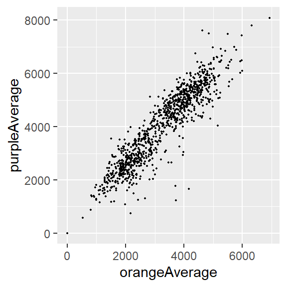
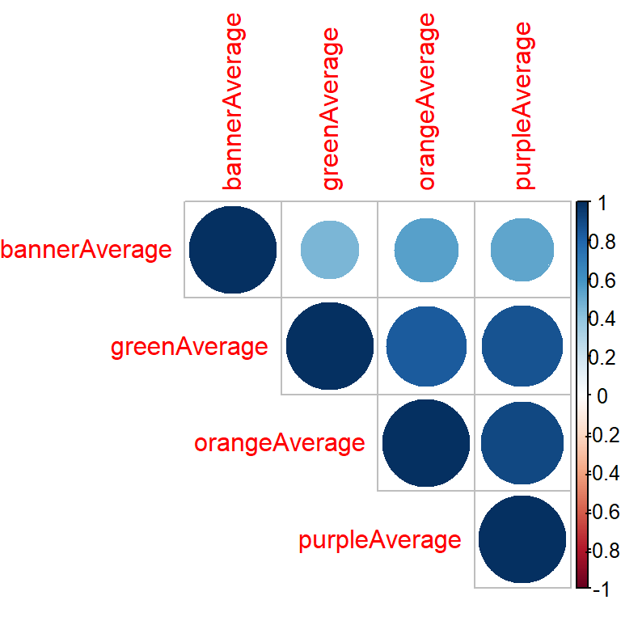
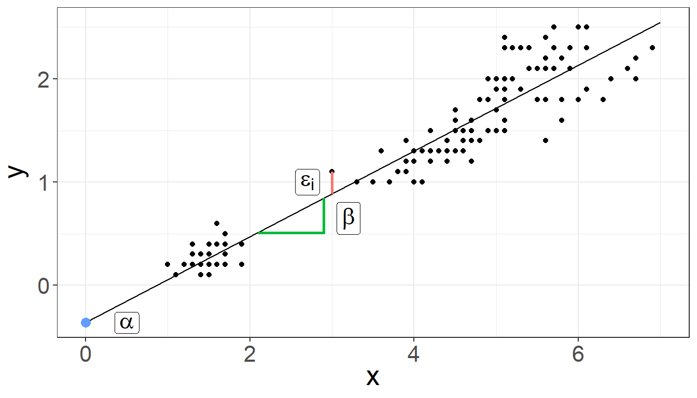
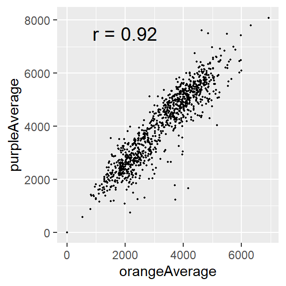

Descriptive Statistics
Summary
ggplot()specifies what data use and what variables will be mapped to where- inside
ggplot(),mapping = aes(x = , y = , color =)specify what variables correspond to what aspects of the plot in general - layers of plots can be combined using the
+at the end of lines - use
geom_line()andgeom_point()to add lines and points - sometimes you need to add a
groupelement tomapping = aes()if your plot looks strange - make sure you are plotting what you think you are by checking the numbers!
facet_grid(~ variable)andfacet_wrap(~variable)can be helpful to quickly split up your plot
Summary
- the factor class allows us to have a different order from alphanumeric for categorical data
- we can change data to be a factor variable using
mutate, theas_factor()(offorcatspackage) orfactor()function and specifying the levels with thelevelsargument - the
fct_reorder({variable_to_reorder}, {variable_to_order_by})helps us reorder a variable by the values of another variable - arranging, tabulating, and plotting the data will reflect the new order
Overview
We will cover how to use R to compute some of basic statistics and fit some basic statistical models.
- Correlation
- T-test
- Linear Regression / Logistic Regression
Overview
🚨 We will focus on how to use R software to do these. We will be glossing over the statistical theory and “formulas” for these tests. Moreover, we do not claim the data we use for demonstration meet assumptions of the methods. 🚨
There are plenty of resources online for learning more about these methods, as well as dedicated Biostatistics series (at different advancement levels) at the JHU School of Public Health.
Check out www.opencasestudies.org for deep dives on some of the concepts covered here.
Correlation
Correlation
Function cor() computes correlation in R
cor(x, y = NULL, use = "everything",
method = c("pearson", "kendall", "spearman"))- provide two numeric vectors (arguments
x,y), or - provide a data.frame / tibble with numeric columns only
- by default, Pearson correlation coefficient is computed
Correlation
https://jhudatascience.org/intro_to_r/data/Charm_City_Circulator_Ridership.csv
library(jhur)
circ <- read_circulator()
head(circ)# A tibble: 6 × 15
day date orang…¹ orang…² orang…³ purpl…⁴ purpl…⁵ purpl…⁶ green…⁷ green…⁸
<chr> <chr> <dbl> <dbl> <dbl> <dbl> <dbl> <dbl> <dbl> <dbl>
1 Monday 01/1… 877 1027 952 NA NA NA NA NA
2 Tuesday 01/1… 777 815 796 NA NA NA NA NA
3 Wednesd… 01/1… 1203 1220 1212. NA NA NA NA NA
4 Thursday 01/1… 1194 1233 1214. NA NA NA NA NA
5 Friday 01/1… 1645 1643 1644 NA NA NA NA NA
6 Saturday 01/1… 1457 1524 1490. NA NA NA NA NA
# … with 5 more variables: greenAverage <dbl>, bannerBoardings <dbl>,
# bannerAlightings <dbl>, bannerAverage <dbl>, daily <dbl>, and abbreviated
# variable names ¹orangeBoardings, ²orangeAlightings, ³orangeAverage,
# ⁴purpleBoardings, ⁵purpleAlightings, ⁶purpleAverage, ⁷greenBoardings,
# ⁸greenAlightingsCorrelation for two vectors
First, we compute correlation by providing two vectors.
Like other functions, if there are NAs, you get NA as the result. But if you specify use only the complete observations, then it will give you correlation using the non-missing data.
x <- circ %>% pull(orangeAverage)
y <- circ %>% pull(purpleAverage)cor(x, y)[1] NAcor(x, y, use = "complete.obs")[1] 0.9195356Correlation for two vectors with plot
In plot form…
circ %>%
ggplot(aes(x = orangeAverage, y = purpleAverage)) +
geom_point(size = 0.3)
Correlation for data frame columns
We can compute correlation for all pairs of columns of a data frame / matrix. We typically just say, “compute correlation matrix”.
Columns must be all numeric!
circ_subset_Average <- circ %>% select(ends_with("Average"))
dim(circ_subset_Average)[1] 1146 4cor_mat <- cor(circ_subset_Average, use = "complete.obs")
cor_mat orangeAverage purpleAverage greenAverage bannerAverage
orangeAverage 1.0000000 0.9078826 0.8395806 0.5447031
purpleAverage 0.9078826 1.0000000 0.8665630 0.5213462
greenAverage 0.8395806 0.8665630 1.0000000 0.4533421
bannerAverage 0.5447031 0.5213462 0.4533421 1.0000000Correlation for data frame columns with plot
- Google, “r correlation matrix plot”
library(corrplot)
corrplot(cor_mat, type = "upper", order = "hclust")
T-test
T-test
The commonly used are:
- one-sample t-test – used to test mean of a variable in one group
- two-sample t-test – used to test difference in means of a variable between two groups (if the “two groups” are data of the same individuals collected at 2 time points, we say it is two-sample paired t-test)
The t.test() function in R is one to address the above.
t.test(x, y = NULL,
alternative = c("two.sided", "less", "greater"),
mu = 0, paired = FALSE, var.equal = FALSE,
conf.level = 0.95, ...)Running one-sample t-test
It tests mean of a variable in one group. By default (i.e., without us explicitly specifying values of other arguments):
- tests whether a mean of a variable is equal to 0 (
mu=0) - uses “two sided” alternative (
alternative = "two.sided") - returns result assuming confidence level 0.95 (
conf.level = 0.95)
x <- circ %>% pull(orangeAverage)
t.test(x)
One Sample t-test
data: x
t = 83.279, df = 1135, p-value < 0.00000000000000022
alternative hypothesis: true mean is not equal to 0
95 percent confidence interval:
2961.700 3104.622
sample estimates:
mean of x
3033.161 Running two-sample t-test
It tests test difference in means of a variable between two groups. By default:
- tests whether difference in means of a variable is equal to 0 (
mu=0) - uses “two sided” alternative (
alternative = "two.sided") - returns result assuming confidence level 0.95 (
conf.level = 0.95) - assumes data are not paired (
paired = FALSE) - assumes true variance in the two groups is not equal (
var.equal = FALSE)
x <- circ %>% pull(orangeAverage)
y <- circ %>% pull(purpleAverage)
t.test(x, y)
Welch Two Sample t-test
data: x and y
t = -17.076, df = 1984, p-value < 0.00000000000000022
alternative hypothesis: true difference in means is not equal to 0
95 percent confidence interval:
-1096.7602 -870.7867
sample estimates:
mean of x mean of y
3033.161 4016.935 T-test: retrieving information from the result with broom package
The broom package has a tidy() function that can organize results into a data frame so that they are easily manipulated (or nicely printed)
library(broom)
result <- t.test(x, y)
result_tidy <- tidy(result)
result_tidy# A tibble: 1 × 10
estimate estimate1 estimate2 statistic p.value param…¹ conf.…² conf.…³ method
<dbl> <dbl> <dbl> <dbl> <dbl> <dbl> <dbl> <dbl> <chr>
1 -984. 3033. 4017. -17.1 4.20e-61 1984. -1097. -871. Welch…
# … with 1 more variable: alternative <chr>, and abbreviated variable names
# ¹parameter, ²conf.low, ³conf.highP-value adjustment
🚨 You run an increased risk of Type I errors (a “false positive”) when multiple hypotheses are tested simultaneously.
Use the p.adjust() function on a vector of p values. Use method = to specify the adjustment method:
my_pvalues <- c(0.049, 0.001, 0.31, 0.00001)
p.adjust(my_pvalues, method = "BH") # Benjamini Hochberg[1] 0.06533333 0.00200000 0.31000000 0.00004000p.adjust(my_pvalues, method = "bonferroni")[1] 0.19600 0.00400 1.00000 0.00004Some other statistical tests
wilcox.test()– Wilcoxon signed rank test, Wilcoxon rank sum testshapiro.test()– Shapiro testks.test()– Kolmogorov-Smirnov testvar.test()– Fisher’s F-Testchisq.test()– Chi-squared testaov()– Analysis of Variance (ANOVA)
Lab Part 1
💻 Lab
Regression
Linear regression
Linear regression is a method to model the relationship between a response and one or more explanatory variables.
We provide a little notation here so some of the commands are easier to put in the proper context.
\[ y_i = \alpha + \beta x_{i} + \varepsilon_i \] where:
- \(y_i\) is the outcome for person i
- \(\alpha\) is the intercept
- \(\beta\) is the slope
- \(x_i\) is the predictor for person i
- \(\varepsilon_i\) is the residual variation for person i
Linear regression

Linear regression
Linear regression is a method to model the relationship between a response and one or more explanatory variables.
We provide a little notation here so some of the commands are easier to put in the proper context.
\[ y_i = \alpha + \beta_1 x_{i1} + \beta_2 x_{i2} + \beta_3 x_{i3} + \varepsilon_i \] where:
- \(y_i\) is the outcome for person i
- \(\alpha\) is the intercept
- \(\beta_1\), \(\beta_2\), \(\beta_2\) are the slopes for variables \(x_{i1}\), \(x_{i2}\), \(x_{i3}\)
- \(x_{i1}\), \(x_{i2}\), \(x_{i3}\) are the predictors for person i
- \(\varepsilon_i\) is the residual variation for person i
Linear regression fit in R
To fit regression models in R, we use the function glm() (Generalized Linear Model).
We typically provide two arguments:
formula– model formula written using names of columns in our datadata– our data frame
Linear regression fit in R: model formula
Model formula \[ y_i = \alpha + \beta x_{i} + \varepsilon_i \] In R translates to
y ~ x
Linear regression fit in R: model formula
Model formula \[ y_i = \alpha + \beta x_{i} + \varepsilon_i \] In R translates to
y ~ x
In practice, y and x are replaced with the names of columns from our data set.
For example, if we want to fit a regression model where outcome is income and predictor is years_of_education, our formula would be:
income ~ years_of_education
Linear regression fit in R: model formula
Model formula \[ y_i = \alpha + \beta_1 x_{i1} + \beta_2 x_{i2} + \beta_3 x_{i3} + \varepsilon_i \] In R translates to
y ~ x1 + x2 + x3
In practice, y and x1, x2, x3 are replaced with the names of columns from our data set.
For example, if we want to fit a regression model where outcome is income and predictors are years_of_education, age, location then our formula would be:
income ~ years_of_education + age + location
Linear regression
We will use data about emergency room doctor complaints.
“Data was recorded on 44 doctors working in an emergency service at a hospital to study the factors affecting the number of complaints received.”
# install.packages("faraway")
library(faraway)
data(esdcomp)
esdcomp visits complaints residency gender revenue hours
1 2014 2 Y F 263.03 1287.25
2 3091 3 N M 334.94 1588.00
3 879 1 Y M 206.42 705.25
4 1780 1 N M 226.32 1005.50
5 3646 11 N M 288.91 1667.25
6 2690 1 N M 275.94 1517.75
7 1864 2 Y M 295.71 967.00
8 2782 6 N M 224.91 1609.25
9 3071 9 N F 249.32 1747.75
10 1502 3 Y M 269.00 906.25
11 2438 2 N F 225.61 1787.75
12 2278 2 N M 212.43 1480.50
13 2458 5 N M 211.05 1733.50
14 2269 2 N F 213.23 1847.25
15 2431 7 N M 257.30 1433.00
16 3010 2 Y M 326.49 1520.00
17 2234 5 Y M 290.53 1404.75
18 2906 4 N M 268.73 1608.50
19 2043 2 Y M 231.61 1220.00
20 3022 7 N M 241.04 1917.25
21 2123 5 N F 238.65 1506.25
22 1029 1 Y F 287.76 589.00
23 3003 3 Y F 280.52 1552.75
24 2178 2 N M 237.31 1518.00
25 2504 1 Y F 218.70 1793.75
26 2211 1 N F 250.01 1548.00
27 2338 6 Y M 251.54 1446.00
28 3060 2 Y M 270.52 1858.25
29 2302 1 N M 247.31 1486.25
30 1486 1 Y F 277.78 933.75
31 1863 1 Y M 259.68 1168.25
32 1661 0 N M 260.92 877.25
33 2008 2 N M 240.22 1387.25
34 2138 2 N M 217.49 1312.00
35 2556 5 N M 250.31 1551.50
36 1451 3 Y F 229.43 973.75
37 3328 3 Y M 313.48 1638.25
38 2927 8 N M 293.47 1668.25
39 2701 8 N M 275.40 1652.75
40 2046 1 Y M 289.56 1029.75
41 2548 2 Y M 305.67 1127.00
42 2592 1 N M 252.35 1547.25
43 2741 1 Y F 276.86 1499.25
44 3763 10 Y M 308.84 1747.50Linear regression: model fitting
We fit linear regression model with the number of patient visits (visits) as an outcome and total number of hours worked (hours) as a predictor.
fit <- glm(visits ~ hours, data = esdcomp)
fit
Call: glm(formula = visits ~ hours, data = esdcomp)
Coefficients:
(Intercept) hours
140.288 1.584
Degrees of Freedom: 43 Total (i.e. Null); 42 Residual
Null Deviance: 16920000
Residual Deviance: 5383000 AIC: 646.3Linear regression: model summary
The summary() function returns a list that shows us some more detail
summary(fit)
Call:
glm(formula = visits ~ hours, data = esdcomp)
Deviance Residuals:
Min 1Q Median 3Q Max
-797.48 -196.35 -43.15 169.58 864.65
Coefficients:
Estimate Std. Error t value Pr(>|t|)
(Intercept) 140.288 242.723 0.578 0.566
hours 1.584 0.167 9.488 0.00000000000526 ***
---
Signif. codes: 0 '***' 0.001 '**' 0.01 '*' 0.05 '.' 0.1 ' ' 1
(Dispersion parameter for gaussian family taken to be 128155.3)
Null deviance: 16919101 on 43 degrees of freedom
Residual deviance: 5382524 on 42 degrees of freedom
AIC: 646.3
Number of Fisher Scoring iterations: 2Linear regression: multiple predictors
Let’s try adding another explanatory variable to our model, dollars per hour earned by the doctor (`revenue``).
fit2 <- glm(visits ~ hours + revenue, data = esdcomp)
summary(fit2)
Call:
glm(formula = visits ~ hours + revenue, data = esdcomp)
Deviance Residuals:
Min 1Q Median 3Q Max
-420.57 -166.87 -17.45 140.79 616.20
Coefficients:
Estimate Std. Error t value Pr(>|t|)
(Intercept) -2078.1369 327.9157 -6.337 0.00000014326 ***
hours 1.6179 0.1081 14.968 < 0.0000000000000002 ***
revenue 8.3437 1.0828 7.706 0.00000000169 ***
---
Signif. codes: 0 '***' 0.001 '**' 0.01 '*' 0.05 '.' 0.1 ' ' 1
(Dispersion parameter for gaussian family taken to be 53620.97)
Null deviance: 16919101 on 43 degrees of freedom
Residual deviance: 2198460 on 41 degrees of freedom
AIC: 608.91
Number of Fisher Scoring iterations: 2Linear regression: factors
Factors get special treatment in regression models - lowest level of the factor is the comparison group, and all other factors are relative to its values.
residency takes values Y or N to indicate whether the doctor is a resident.
esdcomp %>% count(residency) residency n
1 N 24
2 Y 20Linear regression: factors
fit_3 <- glm(visits ~ residency, data = esdcomp)
summary(fit_3)
Call:
glm(formula = visits ~ residency, data = esdcomp)
Deviance Residuals:
Min 1Q Median 3Q Max
-1356.30 -371.55 -62.79 400.46 1527.70
Coefficients:
Estimate Std. Error t value Pr(>|t|)
(Intercept) 2510.8 126.3 19.87 <0.0000000000000002 ***
residencyY -275.5 187.4 -1.47 0.149
---
Signif. codes: 0 '***' 0.001 '**' 0.01 '*' 0.05 '.' 0.1 ' ' 1
(Dispersion parameter for gaussian family taken to be 383122.6)
Null deviance: 16919101 on 43 degrees of freedom
Residual deviance: 16091148 on 42 degrees of freedom
AIC: 694.49
Number of Fisher Scoring iterations: 2Generalized Linear Models (GLMs)
Generalized Linear Models (GLMs) allow for fitting regressions for non-continuous/normal outcomes. Examples include: logistic regression, Poisson regression.
Add the family argument – a description of the error distribution and link function to be used in the model. These include:
binomial(link = "logit")poisson(link = "log"), and other.
See ?family documentation for details of family functions.
Logistic regression
We will use data about breast cancer tumors.
“The purpose of this study was to determine whether a new procedure called fine needle aspiration which draws only a small sample of tissue could be effective in determining tumor status.”
data(wbca)
wbca Class Adhes BNucl Chrom Epith Mitos NNucl Thick UShap USize
1 1 1 1 3 2 1 1 5 1 1
2 1 5 10 3 7 1 2 5 4 4
3 1 1 2 3 2 1 1 3 1 1
4 1 1 4 3 3 1 7 6 8 8
5 1 3 1 3 2 1 1 4 1 1
6 0 8 10 9 7 1 7 8 10 10
7 1 1 10 3 2 1 1 1 1 1
8 1 1 1 3 2 1 1 2 2 1
9 1 1 1 1 2 5 1 2 1 1
10 1 1 1 2 2 1 1 4 1 2
11 1 1 1 3 1 1 1 1 1 1
12 1 1 1 2 2 1 1 2 1 1
13 0 3 3 4 2 1 4 5 3 3
14 1 1 3 3 2 1 1 1 1 1
15 0 10 9 5 7 4 5 8 5 7
16 0 4 1 4 6 1 3 7 6 4
17 1 1 1 2 2 1 1 4 1 1
18 1 1 1 3 2 1 1 4 1 1
19 0 6 10 4 4 2 1 10 7 7
20 1 1 1 3 2 1 1 6 1 1
21 0 10 10 5 5 4 4 7 2 3
22 0 3 7 7 6 1 10 10 5 5
23 1 1 1 2 2 1 1 3 1 1
24 1 1 1 3 2 1 1 1 1 1
25 0 4 7 3 2 1 6 5 3 2
26 1 1 1 2 1 1 1 3 1 2
27 1 1 1 2 2 1 1 5 1 1
28 1 1 1 2 2 1 1 2 1 1
29 1 1 1 1 2 1 1 1 3 1
30 1 1 1 2 1 1 1 3 1 1
31 1 1 1 3 2 1 1 2 1 1
32 0 3 5 7 8 3 4 10 7 7
33 1 2 1 3 2 1 1 2 1 1
34 1 1 1 2 2 1 1 3 2 1
35 1 1 1 2 2 1 1 2 1 1
36 0 8 1 8 6 1 9 10 10 10
37 1 1 1 7 1 1 1 6 1 2
38 0 9 10 5 2 1 6 5 4 4
39 0 3 7 7 6 1 5 2 3 5
40 0 1 3 6 3 2 5 10 3 4
41 0 2 10 7 8 3 3 6 10 10
42 0 6 1 3 10 1 1 5 5 6
43 0 4 1 8 8 1 10 10 10 10
44 1 1 1 2 2 2 1 1 1 1
45 0 4 9 4 4 1 8 3 7 7
46 1 1 1 2 2 1 1 1 1 1
47 1 3 1 3 2 1 1 4 1 1
48 0 2 8 3 4 2 8 7 7 8
49 0 1 3 2 2 5 1 9 8 5
50 0 4 4 3 2 1 4 5 3 3
51 0 2 5 4 3 2 10 10 6 3
52 0 8 8 7 10 7 3 5 5 5
53 0 6 8 7 8 1 1 10 5 5
54 0 3 5 3 4 1 6 10 6 6
55 0 1 6 3 3 1 9 8 10 10
56 0 1 1 5 5 4 4 8 4 2
57 0 1 10 5 6 1 1 5 3 2
58 0 2 2 5 2 1 1 9 5 5
59 0 5 3 4 3 1 10 5 5 3
60 1 1 2 2 2 1 1 1 1 1
61 0 1 8 3 10 1 3 9 10 10
62 0 1 2 3 5 1 9 6 4 3
63 1 1 1 2 2 1 1 1 1 1
64 0 1 2 4 3 10 3 10 2 4
65 1 1 1 3 2 1 1 4 1 1
66 0 1 10 4 8 1 9 5 4 3
67 0 3 9 8 4 8 9 8 8 3
68 1 1 1 3 2 1 2 1 1 1
69 1 1 1 2 2 1 1 5 3 1
70 0 8 2 7 10 10 8 6 2 10
71 1 2 1 7 2 1 2 1 3 3
72 0 10 10 4 6 1 8 9 5 4
73 0 1 4 3 3 3 2 10 4 6
74 1 1 2 4 2 1 2 1 2 1
75 1 1 1 2 2 1 1 1 4 1
76 1 2 1 2 2 1 1 5 1 3
77 1 1 3 3 2 1 1 3 1 1
78 1 1 1 2 3 1 1 2 1 1
79 1 1 1 7 1 1 1 2 2 2
80 1 2 1 2 2 1 1 4 1 1
81 1 1 1 3 2 1 1 5 1 2
82 1 1 2 7 2 1 1 3 1 1
83 0 8 9 7 8 7 10 3 7 5
84 0 1 4 4 10 10 10 5 6 10
85 0 4 8 4 5 1 4 3 6 3
86 0 6 10 6 5 3 8 3 6 6
87 1 1 1 3 2 1 1 4 1 1
88 1 2 1 2 3 1 1 2 1 1
89 1 1 1 3 2 1 1 1 1 1
90 1 2 1 1 2 1 1 3 1 1
91 1 1 1 3 2 1 1 4 1 1
92 1 1 1 2 2 1 1 1 1 1
93 1 1 1 3 2 1 1 2 1 1
94 1 1 1 3 2 1 1 1 1 1
95 1 2 1 1 2 1 1 2 1 1
96 1 1 1 3 2 1 1 5 1 1
97 0 2 6 2 10 10 9 9 9 6
98 0 10 10 7 5 4 9 7 6 5
99 0 1 5 3 10 2 10 10 5 3
100 0 4 5 2 2 1 5 2 4 3
101 1 1 1 3 2 1 1 4 2 1
102 0 1 3 7 6 1 1 8 3 2
103 0 10 1 8 10 8 8 10 10 10
104 0 4 3 3 3 7 2 7 4 3
105 0 8 10 4 2 1 1 10 10 10
106 0 10 10 5 8 1 7 1 8 6
107 1 1 1 2 2 1 3 1 1 1
108 0 4 9 7 3 3 8 6 4 5
109 1 2 2 5 2 2 3 1 1 3
110 0 3 9 3 5 1 1 8 4 6
111 0 10 10 7 2 3 3 10 3 3
112 0 3 8 8 10 1 1 10 10 10
113 1 1 3 3 2 1 1 3 2 3
114 1 1 5 1 2 1 1 1 1 1
115 1 1 2 3 2 1 2 8 3 3
116 0 10 10 7 4 8 5 4 5 5
117 1 1 3 1 4 1 1 1 1 1
118 1 1 2 3 2 1 1 3 1 2
119 1 2 1 3 2 1 1 1 2 1
120 1 1 2 3 2 1 1 4 1 2
121 0 2 10 5 10 3 3 10 10 10
122 0 1 10 5 8 1 3 5 5 3
123 0 7 7 8 9 1 10 5 6 4
124 1 1 1 2 2 1 1 1 1 1
125 0 7 10 7 4 5 5 7 3 5
126 1 1 1 3 2 1 1 3 1 1
127 0 4 10 1 5 2 6 8 5 3
128 1 1 1 1 10 1 1 1 1 1
129 1 1 1 2 2 1 1 5 3 1
130 1 1 1 3 2 1 1 2 1 1
131 0 10 10 3 8 3 6 5 8 10
132 1 1 1 2 2 1 2 3 1 1
133 1 1 1 2 3 1 1 3 1 1
134 1 1 2 3 2 1 3 5 1 1
135 1 1 1 2 2 1 1 4 1 1
136 1 1 1 1 2 1 1 3 1 1
137 1 1 1 2 2 1 1 4 2 1
138 1 1 1 1 2 1 1 3 1 1
139 1 1 1 1 2 1 1 2 1 1
140 0 4 5 4 4 3 3 9 5 5
141 1 1 5 1 2 1 1 1 1 1
142 1 1 1 2 2 1 1 2 1 1
143 0 2 8 4 6 1 1 3 5 4
144 1 1 2 2 3 1 1 1 1 1
145 1 3 1 5 8 1 8 3 1 1
146 0 4 10 7 10 7 8 8 7 8
147 1 1 1 3 1 1 1 1 1 1
148 0 1 10 5 6 3 4 7 4 2
149 0 6 5 8 4 1 10 10 8 10
150 1 1 3 1 2 1 1 4 1 1
151 1 1 1 1 2 1 1 1 1 1
152 0 6 10 3 3 1 1 5 5 5
153 1 1 1 2 2 1 1 1 2 2
154 1 1 1 3 2 1 1 2 1 1
155 0 3 10 7 6 6 10 9 10 9
156 0 4 10 5 5 2 7 10 7 7
157 1 1 1 3 2 1 2 4 1 1
158 1 1 1 3 2 1 1 3 1 1
159 1 2 3 1 1 7 1 1 1 1
160 1 1 2 3 2 1 2 4 1 1
161 0 8 10 3 8 3 10 5 7 6
162 0 10 1 3 6 10 1 10 10 8
163 1 1 1 3 2 1 1 3 1 1
164 1 2 1 1 1 1 1 1 1 1
165 1 1 1 1 2 1 1 3 1 1
166 1 1 1 3 2 1 1 1 1 1
167 1 1 1 2 2 1 1 1 1 1
168 0 10 10 10 8 7 10 6 10 10
169 0 4 10 6 3 1 1 8 5 6
170 0 7 10 5 10 1 7 5 7 8
171 1 1 1 3 2 1 1 2 1 1
172 0 3 1 5 8 3 10 5 10 10
173 1 1 1 3 2 1 1 4 1 1
174 0 3 10 3 6 1 1 5 3 3
175 1 1 1 3 1 1 1 1 1 1
176 1 1 1 1 2 1 1 1 1 1
177 1 1 1 3 2 1 1 6 1 1
178 0 8 10 7 5 1 8 5 8 8
179 0 4 10 5 4 1 1 8 6 7
180 1 1 1 3 1 1 1 2 1 1
181 0 6 8 7 5 1 10 1 8 5
182 0 10 10 7 6 10 7 10 6 5
183 0 10 8 9 5 1 10 5 4 8
184 1 1 1 3 2 1 1 1 3 2
185 0 8 8 7 6 1 10 10 10 10
186 0 10 10 4 10 3 10 7 10 5
187 1 1 1 2 2 1 1 5 1 1
188 1 1 1 3 2 1 1 1 1 1
189 1 1 1 3 2 1 1 3 1 1
190 1 1 1 3 2 1 1 4 1 1
191 1 4 1 3 2 1 1 5 1 1
192 1 1 1 1 2 1 1 1 1 1
193 1 1 1 2 2 1 1 3 1 1
194 0 5 10 7 5 3 8 9 7 7
195 0 4 10 8 10 1 1 10 8 8
196 1 1 1 3 2 1 1 1 1 1
197 1 1 1 3 2 1 1 5 1 1
198 1 1 1 3 2 1 1 1 1 1
199 0 9 10 7 6 5 10 5 10 10
200 0 3 5 3 7 1 5 10 9 10
201 1 1 1 3 1 1 1 1 1 1
202 1 1 1 3 1 1 1 1 1 1
203 1 1 1 3 1 1 1 5 1 1
204 0 10 10 8 5 6 10 8 10 10
205 0 8 8 7 4 1 7 8 8 10
206 1 1 1 3 2 1 1 1 1 1
207 0 10 10 7 7 4 10 10 10 10
208 0 10 10 10 3 1 6 10 10 10
209 0 7 5 5 5 2 10 8 8 7
210 1 1 1 2 2 1 1 1 1 1
211 1 1 1 3 2 1 1 1 1 1
212 0 7 4 8 6 2 10 6 7 10
213 1 1 1 3 2 1 1 6 3 1
214 1 2 1 3 2 1 1 1 1 1
215 0 3 10 9 10 1 10 10 4 6
216 0 3 5 2 1 1 1 4 1 1
217 0 3 8 7 3 1 4 7 6 5
218 0 6 10 7 3 2 9 10 5 5
219 1 1 1 2 2 1 1 1 1 1
220 0 4 10 8 4 1 9 10 7 5
221 0 5 5 7 3 1 7 8 9 9
222 1 1 1 3 1 1 1 1 1 1
223 0 3 10 9 10 1 10 10 10 10
224 0 4 7 7 3 1 6 7 7 4
225 0 5 8 8 6 2 9 6 7 8
226 1 3 1 4 3 1 3 8 6 4
227 0 5 10 4 5 1 1 10 5 4
228 1 1 1 3 3 1 6 3 2 3
229 0 2 10 4 8 10 8 10 8 8
230 0 5 2 4 6 4 10 9 8 8
231 0 8 9 3 6 10 10 8 10 10
232 0 2 10 5 3 2 3 10 3 4
233 1 3 2 2 2 1 3 5 3 1
234 1 3 1 3 1 1 1 3 1 1
235 1 1 1 3 2 1 1 2 1 1
236 1 1 5 5 2 1 1 1 1 1
237 1 1 1 3 2 1 1 1 1 1
238 1 2 2 3 2 1 1 5 1 1
239 0 8 10 7 5 1 8 8 10 10
240 0 1 9 3 2 1 3 8 4 4
241 1 1 1 3 2 1 6 4 1 1
242 1 1 1 1 2 1 1 1 2 2
243 0 10 10 5 2 3 3 10 4 4
244 1 5 10 3 3 3 5 6 3 3
245 0 2 10 7 8 3 3 6 10 10
246 0 1 8 3 10 1 3 9 10 10
247 0 2 10 3 4 1 6 5 6 6
248 1 1 1 1 2 1 1 3 1 1
249 1 1 1 2 2 1 1 3 1 1
250 1 1 1 3 2 1 1 3 1 1
251 1 1 8 3 5 1 4 5 7 7
252 0 10 10 5 3 3 1 10 8 5
253 0 6 10 10 10 5 6 5 10 10
254 0 4 10 7 5 1 8 8 9 8
255 0 10 10 5 6 1 5 10 4 4
256 0 10 3 5 10 3 3 7 4 9
257 1 1 1 3 2 1 2 5 4 1
258 0 3 10 4 3 2 3 10 6 10
259 0 2 10 7 3 1 1 3 5 3
260 0 2 4 8 3 8 7 10 8 8
261 1 1 1 3 2 1 1 1 1 1
262 0 1 10 3 3 2 9 8 7 4
263 1 1 1 3 2 1 1 5 1 1
264 0 2 10 7 3 1 1 3 5 3
265 0 1 4 3 3 1 3 7 4 2
266 1 1 1 3 2 1 2 3 1 1
267 1 1 1 2 2 1 1 3 1 1
268 1 1 1 2 2 1 1 1 1 1
269 1 1 1 3 2 1 1 1 1 1
270 0 3 7 3 3 8 3 10 7 5
271 1 1 1 3 2 1 1 3 1 1
272 1 2 1 3 2 1 1 2 1 1
273 0 10 10 5 4 1 6 1 3 4
274 0 1 10 5 2 1 3 10 6 4
275 0 10 10 3 2 2 8 7 5 4
276 0 10 10 10 8 3 7 8 10 10
277 0 10 10 4 10 10 10 10 10 10
278 1 1 1 2 3 1 1 3 1 1
279 0 1 5 5 4 1 10 6 3 1
280 0 8 10 4 6 4 10 5 6 6
281 1 1 1 1 2 1 1 1 1 1
282 1 1 1 3 2 1 1 1 1 1
283 0 6 10 2 2 1 3 10 4 4
284 0 8 10 7 6 1 4 5 7 5
285 1 3 5 4 4 1 7 5 4 3
286 1 1 1 1 5 1 1 8 1 2
287 0 6 10 7 4 2 7 9 2 1
288 0 5 4 7 4 1 10 8 10 4
289 1 1 1 3 2 1 1 1 1 1
290 0 7 10 7 9 10 10 10 10 10
291 1 1 1 3 2 1 1 1 1 1
292 0 9 10 3 3 1 3 8 4 3
293 0 4 10 3 4 4 10 10 4 8
294 1 1 1 3 2 1 1 1 1 1
295 1 1 1 3 2 1 1 1 1 1
296 0 6 3 8 4 4 8 7 7 8
297 1 1 5 5 2 1 1 3 1 1
298 1 1 1 2 3 1 1 2 1 1
299 1 1 1 1 2 1 1 1 1 1
300 0 10 1 3 10 1 5 8 4 6
301 1 1 1 1 2 1 1 1 1 1
302 1 1 1 2 1 1 1 1 1 1
303 0 2 10 4 5 1 3 5 5 5
304 0 8 8 8 6 1 9 6 7 8
305 1 1 1 3 5 1 1 1 1 1
306 1 4 5 7 6 1 3 4 4 4
307 0 2 10 7 5 6 4 7 3 6
308 1 1 1 3 2 1 1 3 1 1
309 0 10 10 4 2 1 1 5 6 4
310 1 1 1 3 2 1 1 1 1 1
311 1 1 1 2 2 1 3 3 2 2
312 0 1 10 5 2 1 4 10 1 1
313 1 1 1 2 2 1 1 1 1 1
314 0 2 4 3 6 1 10 8 3 10
315 0 4 10 7 5 1 1 10 6 4
316 0 2 8 6 2 1 1 10 7 4
317 1 1 1 3 2 2 1 5 1 1
318 1 2 1 2 2 1 2 5 2 2
319 0 6 10 4 4 1 3 5 6 4
320 0 3 10 3 3 2 4 8 7 6
321 1 1 1 1 2 1 1 1 1 1
322 0 8 10 3 4 1 4 6 5 5
323 1 1 1 3 2 1 1 1 1 1
324 1 1 1 2 1 1 1 1 1 1
325 0 5 10 4 2 1 3 8 5 5
326 0 1 10 7 2 1 6 10 3 3
327 1 1 1 3 2 1 1 1 1 1
328 1 1 1 1 2 1 1 2 1 1
329 1 1 1 1 2 1 1 1 1 1
330 0 8 10 9 10 3 5 7 4 6
331 1 1 1 1 2 1 1 1 1 1
332 1 2 1 1 3 1 3 5 2 2
333 1 1 1 1 1 1 3 1 1 1
334 0 10 1 3 5 1 3 3 4 4
335 0 5 8 7 3 1 6 4 3 2
336 1 3 1 1 2 1 1 5 1 1
337 1 1 1 3 2 1 1 2 1 1
338 1 3 3 4 7 1 6 3 5 4
339 0 10 10 4 7 4 9 2 10 7
340 1 1 1 2 2 1 1 1 1 1
341 1 1 1 2 3 1 2 4 1 1
342 0 1 3 3 3 3 3 5 3 3
343 0 7 10 7 10 8 3 8 10 10
344 0 3 4 4 8 3 10 8 5 10
345 0 4 7 3 3 3 5 10 5 3
346 0 10 10 8 10 10 10 6 10 10
347 0 10 10 5 6 4 1 3 3 10
348 1 1 3 2 4 1 1 3 2 2
349 1 2 3 2 2 1 1 4 4 4
350 1 1 1 3 2 1 1 2 1 1
351 1 1 1 2 2 1 1 2 1 1
352 0 10 10 7 8 7 10 6 10 10
353 0 10 10 8 5 3 10 5 8 8
354 1 1 1 1 2 1 1 1 3 1
355 1 1 1 2 1 1 1 1 3 1
356 1 1 1 2 3 1 1 4 2 3
357 1 1 1 1 2 1 1 1 3 1
358 1 1 1 2 2 1 1 4 2 1
359 1 2 1 2 2 1 1 5 1 1
360 1 1 1 2 2 1 1 3 2 1
361 1 1 1 1 2 1 1 1 1 1
362 1 1 1 2 2 1 1 1 1 1
363 1 1 1 2 1 1 1 1 1 1
364 1 4 1 2 3 1 2 3 1 1
365 1 1 1 3 4 1 1 5 4 3
366 1 1 1 1 2 1 1 1 1 1
367 0 6 10 7 4 4 8 10 3 6
368 1 2 1 3 2 1 2 3 2 2
369 1 1 1 1 2 1 1 2 1 1
370 1 1 1 1 2 1 1 2 1 1
371 1 2 1 1 3 3 2 3 2 3
372 0 3 10 7 2 1 1 7 6 6
373 1 2 1 3 3 1 1 5 3 3
374 1 1 1 2 2 1 2 2 1 1
375 1 1 2 2 3 1 2 5 1 1
376 1 2 1 2 2 1 1 1 1 1
377 0 4 10 7 3 1 9 10 7 8
378 1 1 1 2 2 1 1 3 1 1
379 1 1 1 1 1 1 1 1 1 1
380 1 1 1 2 2 1 1 1 3 2
381 1 1 1 2 2 1 1 3 1 1
382 1 1 1 3 2 1 1 3 1 1
383 1 1 1 1 2 1 1 4 1 1
384 1 1 1 2 2 1 2 3 1 2
385 1 1 1 1 2 1 1 1 3 2
386 0 7 9 9 6 8 3 3 8 10
387 1 1 1 1 2 1 1 3 1 1
388 1 1 1 2 2 1 1 5 3 3
389 1 1 4 1 2 1 1 3 1 1
390 1 3 1 1 2 1 2 1 1 2
391 1 1 1 2 2 1 1 1 1 1
392 1 1 1 2 2 1 1 4 2 2
393 1 1 1 2 2 1 1 1 1 1
394 1 2 2 3 2 1 1 2 2 3
395 1 1 1 2 2 1 1 3 2 1
396 1 1 1 2 2 1 1 1 1 1
397 0 6 4 8 8 1 5 10 10 10
398 1 1 1 3 2 1 1 5 2 1
399 0 2 10 6 3 1 6 8 6 5
400 1 6 3 3 3 1 5 3 2 3
401 0 5 10 7 10 1 2 8 8 7
402 1 1 1 2 2 1 1 1 1 1
403 1 2 2 3 2 2 2 5 2 2
404 1 1 1 1 5 1 1 2 1 3
405 1 3 3 3 2 1 1 3 2 2
406 0 7 10 8 10 1 2 10 10 10
407 1 1 1 3 2 1 3 4 3 3
408 1 1 1 2 2 1 1 5 3 1
409 1 1 1 1 2 1 1 3 1 1
410 0 10 10 10 10 1 10 9 10 10
411 1 1 1 1 2 1 1 5 6 3
412 0 2 2 5 4 1 10 8 8 7
413 1 1 1 2 2 1 1 1 1 1
414 1 1 1 2 2 1 1 2 1 1
415 1 1 1 2 2 1 2 1 1 3
416 1 3 1 3 4 1 2 5 1 1
417 1 1 1 2 2 1 2 5 1 1
418 1 3 1 1 2 1 1 3 2 2
419 1 5 8 4 5 1 2 6 7 9
420 0 1 10 5 3 1 1 10 10 8
421 0 1 1 2 6 1 8 10 10 10
422 1 1 1 1 2 1 1 4 1 1
423 1 3 1 1 2 1 1 4 3 1
424 1 1 1 1 2 1 1 5 1 1
425 0 10 10 10 4 1 1 10 3 4
426 1 4 4 1 2 1 1 5 2 2
427 1 3 3 1 2 1 1 1 1 1
428 1 1 2 1 2 1 1 1 1 1
429 1 6 1 2 3 1 1 5 1 1
430 1 1 1 1 2 1 1 2 1 1
431 1 1 1 1 2 1 1 1 1 1
432 1 1 1 1 2 1 1 5 1 1
433 1 1 1 1 1 1 1 1 1 1
434 0 8 10 8 6 1 10 5 9 7
435 1 3 1 2 1 1 1 4 1 1
436 1 1 1 1 2 1 1 5 1 1
437 1 3 1 1 2 1 1 3 1 1
438 0 8 10 10 6 1 7 4 5 5
439 1 1 1 1 3 1 1 2 1 3
440 0 1 6 1 2 2 1 10 2 2
441 0 8 10 8 5 1 6 10 5 6
442 0 6 3 10 6 1 10 8 9 8
443 1 1 1 1 2 1 1 5 2 1
444 1 1 1 1 2 1 1 5 3 1
445 1 3 1 1 2 1 1 5 1 1
446 1 1 5 1 2 1 1 3 1 1
447 1 3 1 1 2 1 1 6 1 1
448 1 1 1 1 2 1 2 4 1 1
449 1 1 1 1 2 1 1 4 1 1
450 0 7 4 7 6 3 10 10 8 9
451 0 2 10 9 4 1 7 10 6 6
452 0 5 10 7 4 2 6 6 6 6
453 1 1 1 1 2 1 1 4 1 1
454 1 1 1 2 2 1 1 1 2 1
455 1 1 1 2 1 1 1 3 1 1
456 1 3 1 1 2 1 1 6 1 1
457 1 1 1 1 1 1 1 6 1 1
458 1 1 1 1 2 1 1 4 1 1
459 1 1 1 1 2 1 1 5 1 1
460 1 1 1 1 2 1 1 3 1 1
461 1 1 1 1 2 1 1 4 2 1
462 1 1 1 1 2 1 1 4 1 1
463 1 1 1 1 2 1 1 5 1 2
464 0 10 10 7 4 1 5 4 7 8
465 1 1 1 1 1 1 1 5 1 1
466 1 4 1 1 2 1 1 5 2 3
467 0 10 5 10 10 10 10 9 10 10
468 0 5 10 9 5 1 10 8 8 7
469 1 1 1 1 2 1 1 5 2 1
470 1 3 3 1 1 1 1 1 1 1
471 1 1 1 2 1 1 1 3 1 1
472 0 10 10 8 6 5 1 10 10 10
473 0 10 3 3 3 1 4 3 4 6
474 0 1 4 4 3 1 1 6 2 3
475 1 1 1 1 2 1 1 1 1 1
476 0 4 10 7 3 1 1 5 9 8
477 1 1 1 2 1 1 1 4 1 1
478 0 10 10 6 6 2 5 5 10 10
479 1 10 5 2 4 1 1 5 2 1
480 1 1 1 2 1 1 1 3 1 1
481 1 1 1 1 1 1 1 1 1 1
482 1 1 1 1 2 1 1 4 1 2
483 1 1 1 2 2 1 1 4 1 1
484 1 1 1 2 2 1 1 4 1 1
485 1 1 1 3 2 1 1 6 1 1
486 1 1 1 2 2 1 1 4 1 1
487 1 2 1 2 2 1 1 4 1 1
488 1 1 1 3 2 1 1 4 1 1
489 1 1 1 1 2 1 1 1 1 1
490 1 1 1 1 2 1 1 3 1 3
491 0 10 5 4 7 7 8 8 10 10
492 1 1 4 1 2 1 1 1 1 1
493 1 1 1 1 2 1 1 5 1 1
494 1 1 1 1 2 1 1 2 1 1
495 1 1 1 1 2 1 1 1 1 1
496 1 1 1 2 2 1 1 5 1 1
497 1 1 1 1 2 1 1 5 1 1
498 1 1 1 2 1 1 1 3 1 1
499 0 10 10 8 3 2 10 6 7 6
500 0 7 10 9 3 1 10 4 4 10
501 1 1 1 1 1 1 1 1 1 1
502 1 1 1 2 1 1 1 1 1 1
503 1 2 1 1 2 1 1 3 2 1
504 0 3 10 9 4 1 1 4 8 7
505 1 1 1 1 3 1 1 1 1 1
506 1 1 1 1 3 1 1 4 1 1
507 0 4 5 7 3 1 3 10 5 4
508 0 10 10 5 4 1 3 7 6 5
509 1 1 1 2 2 1 1 3 1 1
510 1 2 1 1 2 1 1 3 1 1
511 1 1 1 1 2 1 1 4 1 1
512 1 1 1 3 2 1 1 4 1 1
513 1 2 1 1 2 1 1 6 3 1
514 1 1 1 2 1 1 1 4 1 1
515 0 3 10 6 4 1 9 7 4 4
516 1 1 1 2 2 1 1 4 2 2
517 1 1 1 3 1 1 1 1 1 1
518 1 1 1 2 2 1 1 3 1 1
519 1 1 1 2 2 1 1 2 1 1
520 1 2 1 3 2 1 1 1 3 1
521 1 1 1 3 2 1 1 5 1 1
522 1 1 1 3 2 1 1 5 2 1
523 1 1 1 2 2 1 1 4 1 1
524 1 1 1 2 2 1 1 6 1 1
525 1 1 2 2 2 1 1 5 1 1
526 1 1 1 1 2 1 1 3 1 1
527 1 1 1 1 2 1 1 5 1 3
528 1 1 1 2 2 1 1 4 1 1
529 1 2 1 2 2 1 1 2 3 1
530 1 1 1 2 2 1 1 5 1 1
531 0 10 10 7 4 1 10 6 10 10
532 1 1 1 1 1 1 1 2 1 1
533 1 1 1 1 1 1 1 3 1 1
534 0 7 5 7 4 2 8 7 3 8
535 1 1 1 2 2 1 1 3 1 1
536 1 1 1 3 2 1 1 1 1 1
537 1 2 1 4 2 1 2 3 2 2
538 1 1 5 2 2 2 1 4 2 4
539 1 1 1 1 2 1 1 3 1 1
540 1 1 1 4 2 1 8 4 1 3
541 1 2 1 2 1 1 1 5 2 2
542 1 3 1 1 2 1 1 5 1 1
543 1 1 1 2 2 1 1 2 1 1
544 1 1 1 2 2 1 1 5 1 1
545 1 1 1 3 2 1 1 5 1 1
546 1 1 1 3 2 1 1 5 1 1
547 1 1 1 3 2 1 1 1 1 1
548 1 1 1 2 2 1 1 3 1 1
549 1 1 1 3 2 1 2 4 1 1
550 0 10 10 10 5 1 10 5 10 7
551 1 1 1 3 2 1 1 3 2 1
552 1 1 3 2 2 1 1 4 1 1
553 0 1 10 2 6 2 5 8 4 4
554 0 10 5 10 6 1 3 10 8 10
555 0 4 10 8 8 1 2 8 4 10
556 0 5 10 9 3 2 10 7 10 6
557 1 1 1 2 2 1 1 3 1 1
558 1 1 1 2 2 1 1 1 1 1
559 0 3 2 7 4 1 7 10 7 9
560 1 1 1 3 2 1 1 5 2 1
561 1 1 1 2 2 1 1 5 1 1
562 1 1 1 2 2 1 1 1 1 1
563 1 1 1 2 2 1 1 1 1 1
564 1 1 1 3 2 1 1 1 1 1
565 1 1 1 2 2 1 1 5 2 1
566 0 6 10 7 5 1 5 5 10 7
567 0 5 10 6 4 1 10 6 5 10
568 1 1 1 1 2 1 1 3 1 1
569 1 6 1 1 3 1 1 5 1 1
570 1 1 1 1 2 1 1 1 1 1
571 0 10 10 10 6 1 10 8 10 10
572 1 1 1 2 2 1 2 5 1 1
573 0 9 3 4 6 1 1 9 8 8
574 1 1 1 1 2 1 1 5 1 1
575 0 5 1 10 4 1 1 4 8 10
576 0 6 10 7 4 1 6 2 7 5
577 0 5 10 4 3 1 1 10 4 3
578 1 1 1 1 2 1 1 5 2 1
579 0 3 10 7 4 1 1 4 6 8
580 1 1 1 2 2 1 1 5 1 1
581 1 1 1 2 2 1 1 4 2 1
582 1 1 1 3 2 1 1 5 3 1
583 1 1 1 2 2 1 1 3 1 1
584 1 1 1 1 1 1 1 5 4 2
585 1 1 1 2 2 1 1 3 1 1
586 1 1 1 2 1 1 1 1 1 1
587 1 1 1 2 2 1 1 4 1 1
588 0 8 1 8 4 1 10 5 6 4
589 0 8 10 8 5 2 1 5 2 3
590 0 3 8 7 5 3 8 10 10 5
591 1 2 1 1 2 1 1 4 1 1
592 1 1 1 1 2 1 1 1 1 1
593 0 10 10 10 10 1 1 5 10 10
594 1 1 1 1 2 1 1 5 1 1
595 0 10 10 7 3 2 1 10 3 4
596 0 10 10 10 6 10 10 8 10 10
597 1 1 1 2 2 1 1 2 1 3
598 1 1 1 2 1 1 1 2 1 1
599 1 1 1 2 2 1 1 4 3 1
600 1 1 1 2 2 1 1 3 1 1
601 1 1 1 2 2 1 1 4 1 1
602 1 1 1 2 2 1 1 5 1 1
603 1 1 1 2 2 1 1 3 1 1
604 1 3 2 6 3 1 1 6 3 3
605 1 3 1 2 2 1 1 7 2 1
606 1 1 1 1 2 1 1 1 1 1
607 1 2 1 2 1 1 1 5 1 1
608 1 1 4 1 3 1 1 3 3 1
609 0 5 6 7 7 3 7 4 6 6
610 1 1 5 1 2 1 1 2 1 1
611 1 1 1 1 2 1 1 2 1 1
612 1 1 1 1 2 1 1 4 1 1
613 1 1 1 1 2 1 1 6 3 2
614 1 1 1 2 2 1 1 5 1 1
615 1 1 1 1 2 1 1 1 1 1
616 0 4 3 5 5 1 10 8 4 7
617 1 1 1 1 2 1 1 3 1 1
618 1 1 1 1 2 1 1 3 4 1
619 0 8 1 10 7 3 10 10 7 10
620 1 3 2 2 2 1 1 4 4 2
621 1 1 1 1 2 1 1 4 1 1
622 1 3 1 1 2 1 1 5 1 1
623 1 3 1 1 2 1 1 4 1 1
624 1 1 1 2 2 1 1 3 1 1
625 1 1 1 2 2 1 1 3 1 1
626 1 1 1 1 2 1 1 1 1 1
627 1 1 1 1 2 1 1 2 1 1
628 1 1 1 2 2 1 1 3 1 1
629 1 1 1 1 2 1 1 1 2 2
630 1 3 1 1 2 1 1 1 1 1
631 0 10 2 10 10 10 10 5 10 10
632 1 1 1 2 2 1 1 3 1 1
633 1 2 4 1 3 1 1 3 1 1
634 1 3 1 2 2 1 1 1 1 2
635 1 1 1 2 2 1 2 5 1 1
636 1 1 1 2 2 1 1 4 1 1
637 1 1 1 3 2 1 1 3 1 1
638 1 1 1 2 2 1 1 3 1 1
639 1 1 1 2 2 1 1 5 1 1
640 1 1 1 3 8 1 6 5 5 4
641 0 7 10 7 3 3 2 7 8 8
642 1 1 1 1 2 1 1 1 1 1
643 1 1 1 2 2 1 1 1 1 1
644 1 1 1 3 2 1 1 4 1 1
645 1 1 1 2 2 1 1 1 3 1
646 1 1 1 2 2 1 1 1 3 1
647 1 3 1 2 2 1 1 3 1 1
648 1 1 1 1 2 1 1 1 1 1
649 1 2 1 1 2 2 1 5 2 2
650 1 1 1 3 2 1 1 3 1 1
651 0 1 1 7 6 3 10 5 4 7
652 0 8 5 7 5 1 10 5 10 10
653 0 8 8 7 5 1 4 3 7 10
654 1 2 1 3 2 1 1 3 1 2
655 1 1 1 3 2 1 1 2 1 1
656 1 1 1 1 3 1 1 5 2 3
657 1 1 1 2 2 1 1 1 1 1
658 1 1 1 1 2 1 1 4 4 1
659 1 1 1 2 2 1 1 1 2 1
660 1 1 1 1 2 1 1 5 1 1
661 1 1 1 1 2 1 1 1 1 1
662 1 1 1 1 2 1 1 2 1 1
663 0 10 10 10 5 7 10 10 10 10
664 0 10 10 5 4 3 6 5 10 10
665 1 1 1 3 2 1 2 5 1 1
666 1 1 1 1 2 1 1 1 1 1
667 1 1 1 1 2 1 1 1 1 1
668 1 1 1 1 2 1 1 1 1 1
669 1 1 1 1 2 1 1 1 1 1
670 1 1 1 2 2 1 3 3 1 1
671 1 1 1 1 2 1 1 4 1 1
672 1 1 1 1 2 8 1 1 1 1
673 1 3 1 1 2 1 1 1 1 1
674 0 5 5 4 4 1 4 5 10 10
675 1 1 1 1 2 1 1 3 1 1
676 1 1 1 2 2 2 1 3 1 1
677 1 1 2 1 3 1 1 3 1 1
678 1 1 1 1 2 1 1 2 1 1
679 0 3 3 8 7 2 10 5 10 10
680 0 4 4 10 3 1 6 4 6 8
681 0 5 5 10 4 1 4 4 8 8Logistic regression
Class is a 0/1-valued variable indicating if the tumor was malignant (0 if malignant, 1 if benign).
binom_fit <- glm(Class ~ UShap + USize, data = wbca, family = binomial())
summary(binom_fit)
Call:
glm(formula = Class ~ UShap + USize, family = binomial(), data = wbca)
Deviance Residuals:
Min 1Q Median 3Q Max
-2.8262 -0.0171 0.1929 0.1929 4.0082
Coefficients:
Estimate Std. Error z value Pr(>|z|)
(Intercept) 5.6868 0.4359 13.047 < 0.0000000000000002 ***
UShap -0.8431 0.1593 -5.292 0.000000121 ***
USize -0.8686 0.1690 -5.139 0.000000277 ***
---
Signif. codes: 0 '***' 0.001 '**' 0.01 '*' 0.05 '.' 0.1 ' ' 1
(Dispersion parameter for binomial family taken to be 1)
Null deviance: 881.39 on 680 degrees of freedom
Residual deviance: 218.28 on 678 degrees of freedom
AIC: 224.28
Number of Fisher Scoring iterations: 7Odds ratios
This data shows whether people became ill after eating ice cream in the 1940s.
head(ice_cream) ill vanilla.ice.cream
1 1 1
2 1 1
3 1 1
4 1 1
5 1 1
6 1 1ice_cream %>% count(ill, vanilla.ice.cream) ill vanilla.ice.cream n
1 0 0 18
2 0 1 11
3 1 0 3
4 1 1 43Odds ratios
Use oddsratio(x, y) from the epitools() package to calculate
library(epitools)
response <- ice_cream %>% pull(ill)
predictor <- ice_cream %>% pull(vanilla.ice.cream)
oddsratio(predictor, response)$data
Outcome
Predictor 0 1 Total
0 18 3 21
1 11 43 54
Total 29 46 75
$measure
odds ratio with 95% C.I.
Predictor estimate lower upper
0 1.00000 NA NA
1 21.40719 5.927963 109.4384
$p.value
two-sided
Predictor midp.exact fisher.exact chi.square
0 NA NA NA
1 0.0000002698215 0.0000002597451 0.0000001813314
$correction
[1] FALSE
attr(,"method")
[1] "median-unbiased estimate & mid-p exact CI"Final note
Some final notes:
Researcher’s responsibility to understand the statistical method they use – underlying assumptions, correct interpretation of method results
Researcher’s responsibility to understand the R software they use – meaning of function’s arguments and meaning of function’s output elements
Summary
- Use
cor()to calculate correlation between two vectors.corrplot()is nice for a quick visualization! t.test()tests the difference in means between two vectorsglm()fits regression models:- Use the
formula =argument to specify the model (e.g.,y ~ xory ~ x1 + x2using column names) - Use
data =to indicate the dataset - Use
family = binomial()to do a logistic regression summary()gives useful statistics
- Use the
oddsratio()from theepitoolspackage can calculate odds ratios- this is just the tip of the iceberg!
Lab Part 2
💻 Lab
The end!
Extra Slides
Adding correlation value to a plot
Note that you can add the correlation value to a plot, via the annotate().
cor_val <- cor(x, y, use = "complete.obs")
cor_val_label <- paste0("r = ", round(cor_val, 3))
circ %>%
ggplot(aes(x = orangeAverage, y = purpleAverage)) +
geom_point(size = 0.3) +
annotate("text", x = 2000, y = 7500, label = cor_val_label, size = 5)